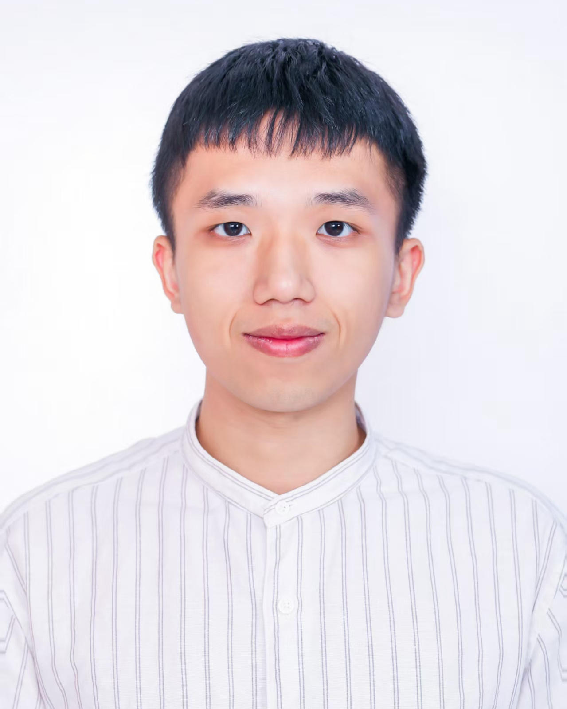
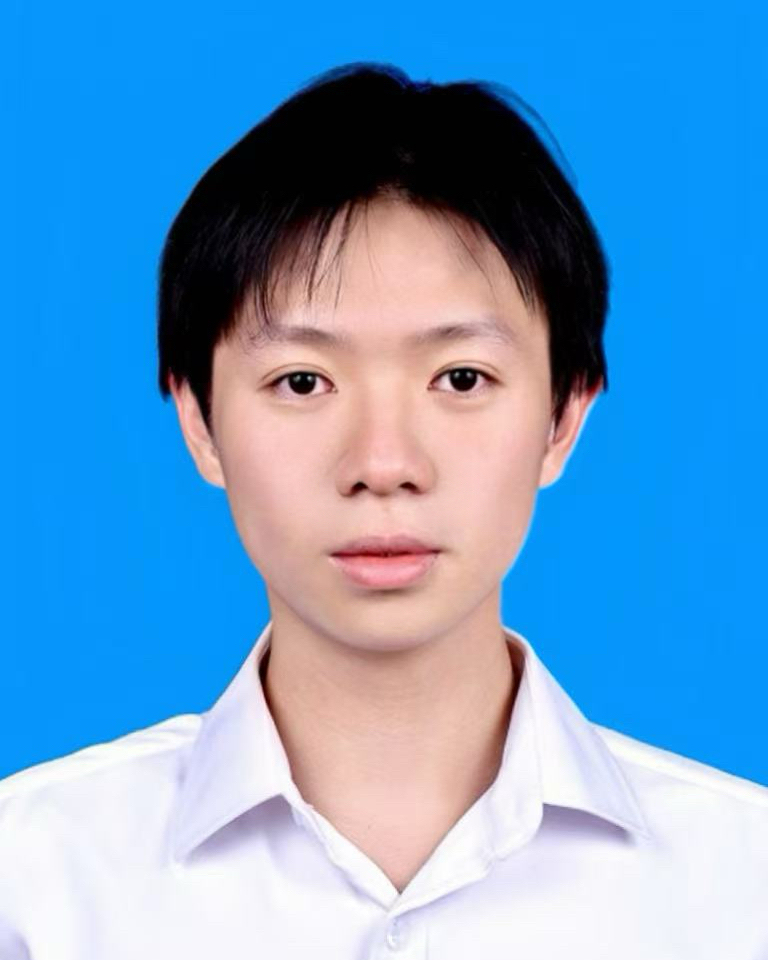
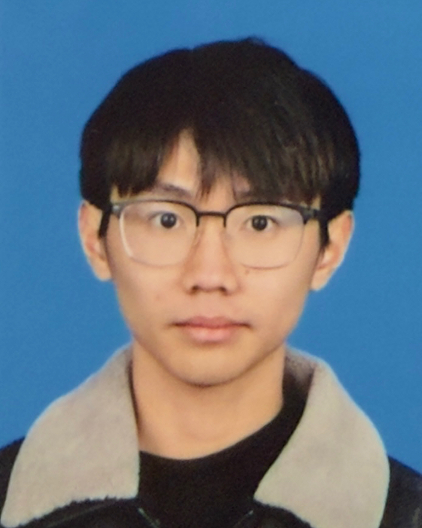

MARKET SIGNAL 01中國 60+ 人口 · 2006–2025
老齡化加速，照護需求同步擴張。
+117%
中國 60+ 人口增幅
1.4901 億 → 3.2338 億
需求增長，不是短期波動。
資料來源：國家統計局歷年統計公報2022 年後，年均淨增超過 1,300 萬人。
01 / MARKET SIGNAL
長者風險的基礎人群持續擴大；
兒童側，跌倒／墜落則長期位列非致死傷害首位。
照護缺口不是偶發事件。
需求增長，不是短期波動。
更早發現，才能更快處置。
風險集中在低齡、家庭與玩耍時段。
鏡頭一直在拍，但照護者無法 24 小時盯屏。真正需要的是：主動發現、即時到達、可被處置。
中國 60+ 人口
2006–2025 增幅
全球跌倒死亡中
60+ 佔比（2021）
長者跌倒／碰撞傷害
發生於家中
02 / THE SOLUTION
守望 AI 在邊緣端理解人物姿態、運動時序、危險區域與靜止時間，只在形成風險事件後，把原因、等級與最小必要證據送達監護人。
市場不缺「能看見」的設備，缺的是看懂風險，並確保有人接手。
市場缺口｜主動發現
市場缺口｜穩定使用
市場缺口｜真實家庭可用
市場缺口｜隱私與離線可用
03 / WHY US
我們的差異化不在「第一個做跌倒檢測」，而在於用更低的遷移成本、更克制的數據策略和更完整的處置閉環，讓方案真正適合家庭與機構。
兼容已有攝像頭與家庭計算終端，減少更換全套硬體的門檻，也為不同品牌設備保留選擇權。
LOWER SWITCHING COST連續原始視頻優先在本地處理，雲端只接收最小必要的事件資訊；用戶可撤銷授權並控制證據保留。
EDGE FIRST / MINIMUM DATA展示「為什麼告警」，並記錄查看、確認和升級結果。系統提供的是可行動事件，不只是一個黑箱置信分數。
EXPLAINABLE & ACTIONABLE04 / GO-TO-MARKET
家庭訂閱驗證付費｜機構 SaaS 建立年約｜SDK 放大全球渠道。
同一套風險事件能力，覆蓋個人、機構與品牌渠道。
01｜家庭訂閱
低門檻個人訂閱
圖片通知・多人接手・事件升級
02｜機構 SaaS
＋ 活躍通道／床位費
事件隊列・分權・審計
03｜攝像頭品牌 SDK
＋ 活躍設備費
品牌預裝・App 接入・B2B2C
05 / THE ASK
我們以本地優先的視覺理解，把疑似跌倒、長時間倒地與危險區域進入整理成可解釋、可追蹤、可閉環的風險事件，讓照護者只處理真正重要的訊號。
TEAM / WHO WE ARE
四位成員本科均畢業於北京理工大學；其中三位繼續在北京大學或北京理工大學攻讀碩士學位。

產品 / 項目管理

後端 / 安全

算法 / 硬件
設計 / 體驗